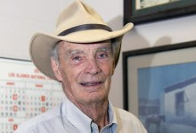

Please note: the AAS Obituaries are temporarily being hosted on this website while their full content is being ingested into the PubPub publishing platform newly adopted by the Bulletin of the American Astronomical Society. When the migration is complete, your existing links will take you to the final, migrated content. Contact peter.williams@aas.org with any questions.
Stirling A. Colgate (1925-2013)
Reprinted with permission from the Los Alamos Daily Post.
Los Alamos National Laboratory Senior Fellow and longtime Laboratory scientist Stirling Colgate of the Nuclear and Particle Physics, Astrophysics and Cosmology Group died Sunday (Dec. 1) at his home in White Rock. A co-founder of the Santa Fe Institute, Colgate, 88, also was president of the New Mexico Institute of Mining and Technology in Socorro from 1965 to 1974 and a professor emeritus of physics at the school.
"Los Alamos has lost a tremendous scientist, colleague, mentor and friend," said Director Charlie McMillan. "His contributions to physics and national security science, including some very recent work, are broad, deep and exceptionally creative. On behalf of the Lab, I offer our deepest condolences to Stirling's family."
"He was an incredibly nice guy. It was a quality most people didn't see in him," noted Laboratory Fellow James L. Smith of the Materials Technology/Metallurgy Group. "[Stirling] really loved having young people around who wanted to talk to him. He really cared about helping young people."
"I think Stirling was a fantastic mentor to students and postdocs," said Theoretical Division Leader Tony Redondo. "His office was always full of young people who were very excited to have discussions with him. Stirling always had very interesting ideas."
Colgate was born Nov. 14, 1925 in New York City. He attended the Los Alamos Ranch School until 1942 when the school closed in the run-up to the Manhattan Project. Colgate served two years in the Merchant Marines before attending Cornell where he earned bachelor's (1948) and doctoral degrees in physics (1951). He worked at Lawrence Livermore National Laboratory from 1952 to 1965; his career at both LANL and LLNL totaled 50 years.
Colgate came to then Los Alamos Scientific Laboratory in September 1976 where he worked in various groups in Theoretical Division. He was named a Senior Laboratory Fellow in 1987. From late 2008 to the present, Colgate was a Lab associate Fellow in Nuclear and Particle Physics, Astrophysics and Cosmology.
Colgate was a member of the National Academy of Sciences. More recently, Colgate and Hui Li of Nuclear and Particle Physics, Astrophysics and Cosmology, were co-principal investigators of a Laboratory Directed Research and Development (LDRD) project that involved experimental work at New Mexico Tech involving astrophysical phenomena and turbulence.
Colgate is survived by his wife Rosie; a son and a daughter; four granddaughters; a great-grandson; and sister Anne Sutton of Honolulu.
Submitted by Carol A. Clark
Obituary written by: Carol A. Clark
BAAS Citation: BAAS, 2013, 45, 015